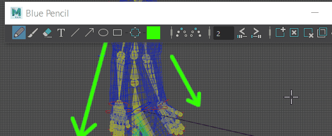
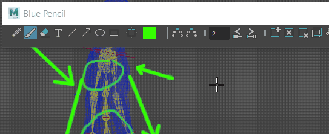
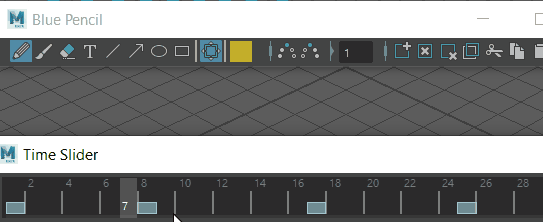

Blue Pencil 工具栏中的清理工具
Blue Pencil 工具栏具有用于删除 Blue Pencil 草图的基本工具：
- 橡皮擦(Erase)
- 使用“橡皮擦”(Eraser)工具移除图形的某些部分。
- 单击 Blue Pencil 工具栏上的“橡皮擦”(Eraser)图标 ，然后在要擦除的图像部分上拖动光标。

- 在“橡皮擦”(Eraser)图标 上单击鼠标右键，以设置橡皮擦的大小。
- 清除帧(Clear Frame)
- 擦除整个帧的内容（而不删除帧）。
- 单击 Blue Pencil 工具栏上的“清除帧”(Clear Frame)图标 ，以擦除活动帧中的所有图形。

- 删除帧(Delete Frame)
- 从场景中移除帧及其图形。
- 单击 Blue Pencil 工具栏上的“删除帧”(Delete Frame)图标，以从场景中移除帧及其图形。
